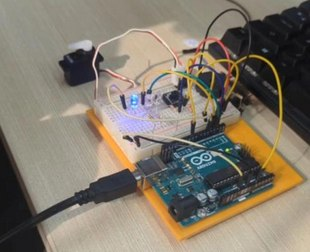

Arduino · Knock sensing · Door lock
Knock-Pattern Door Unlocking Mechanism
We built a door lock that responds to a set knock pattern.
A buzzer worked as the sensor and picked up the knocks.
The Arduino checked the pattern against the stored one.
When the pattern matched, the door unlocked.
